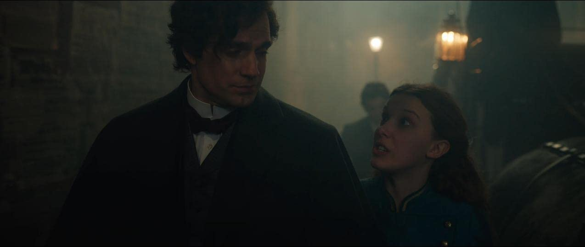

- Directed by Harry Bradbeer
- Starring
- Millie Bobby Brown
- Henry Cavill
- Helena Bonham Carter
- Louis Partridge
- David Thewlis
Dear Old Grumpy is getting quite forgetful these days. Unable to find anything to watch, he kept clicking the attachment until ‘Enola Holmes 2’ came up in front of him.
Not knowing anything about it he started to watch it and he thought, this is quite good. Then he looked at the leading man and he thought – that looks like that chap who plays Superman – but he thought; no, he couldn’t be in a small film like this, he only makes Blockbusters. Any way he went along with it and at the end, suddenly realized that it was called ‘Enola Holmes 2’ suggested there had been an ‘Enola Holmes 1’, previously. And then he searched and found ‘Enola Holmes’. So, out of sequence he then watched the first film. I tell you that to explain how silly he is.
Suffice to say, I think both films are terrific, they are a lot of fun, and the leading man is indeed Henry Cavill of ‘Superman’ fame. [And he is a perfect Sherlock Holmes.]
 "Did you explain that your mum's name was Martha too?"So, the second one first – it’s a conceit, of course, originally from a novel, suggesting that Sherlock Holmes had a feisty young sister as well as the genius brother Mycroft. Coupled with this they have a liberated mother who is all for women’s rights and wanting to bring down parliament. This is a wonderfully over-the-top performance from Helena Bonham Carter.
Millie Bobby Brown, as Enola, is spot on. She is the perfect ‘tomboy’, running through London often being chased by the villains and stopping often to speak her asides directly to the camera. All of this works very well. She has a boyfriend, whom she meets in Film No. 1, Viscount Tewkesbury, played by Louis Partridge and she cossets him through many adventures. The Viscount is a bit backward in coming forward.
 Put your hand up if you thought the cop in the background was PC Danny from Hot Fuzz? üôã‚Äç‚ôÄÔ∏è
Put your hand up if you thought the cop in the background was PC Danny from Hot Fuzz? üôã‚Äç‚ôÄÔ∏è
This screenplay, not from one of the novels, is an adaptation of the little match girl deaths of the late 19th century. There are lots of chases, fights, explosions and riots to keep everybody happy.
Enola gets closer to her Viscount than in the first film and all looks rosy for the future.
 Hmmm yes, those shackles look inescapable, although she is Holmes...
Hmmm yes, those shackles look inescapable, although she is Holmes...
In the first film we see Helena Bonham Carter disappear, [she has important work to do in London.] Enola sets off to find her. Mother keeps dropping cryptic clues through the daily press to Enola, so she knows she is on the right trail. Enola meets up with the young Viscount, on a train, escaping from his family and she rescues him from many scrapes. Mycroft attempts to tame his little sister and the villain played by an horrendous David Thewlis chases the two lovers all over the countryside culminating in a wonderful fight scene in a theatre.
Added to this we have an overbearing headmistress and a wicked uncle. Enough to keep everyone happy.
Certainly, a lot of fun. I advise you to watch them in the correct order.
Star Rating: 4/5 - Recommended - Recommended
[I can’t say the same for a shocker which appeared this week ‘My Policeman’ – more on this later – perhaps.]